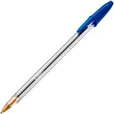
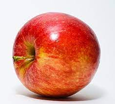
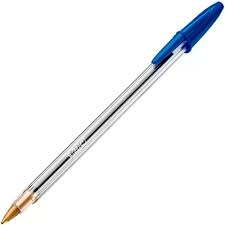
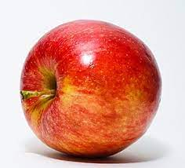

A Programação Orientada a Objectos ou POO é um paradigma de Programação que tem o propósito de aproximar o mundo real e o mundo em que vivemos.
Mas o que é isso Paradigma?
Bem, isso só é um nome bonito para dizer um estilo de se programar, ou seja, o seu modo de escrever código.
Então como funciona esse tal de estilo de Programação?
Não asssuste, vamos com calma. Como já definimos ele tenta aproximar o mundo real ao mundo da programação, e para ele tudo é um Objecto
Mas o que é isso um objecto?

 



Para ti o que é um objecto?
Sei que vais responder: bom, é tudo aquilo que toco, vejo,sinto... É algo concreto
Sim, é isso, mas em Programação orientada a objectos um objecto também pode ser abstrato, como a sua agenda, a mente humana, A festa da Nacialete, uma venda, etc...
Isso tudo? Não uma definição formal?
Tem sim! Veja:
Coisa material ou abstrata que pode ser percebida pelos sentidos e descrita por meio das suas caracteristicas,comportamento e estado actual